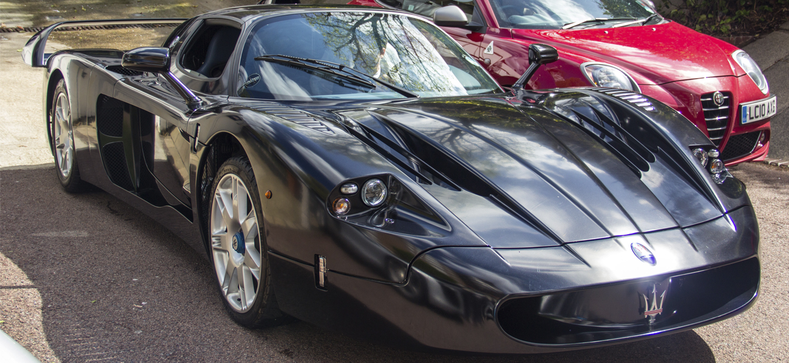

Maserati MC12-двухместный гиперкар, созданный Maserati для состязаний в FIA GT Championship. Автомобиль вышел в производство в 2004 году (было выпущено 30 автомобилей, 5 из которых не для продажи). Ещё 25 автомобилей было выпущено в 2005 году, что суммарно дало 50 автомобилей для продажи.
Гоночная версия выпускалась лимитированной серией. Автомобиль выпускался с середины 2006 года. Всего было произведено 15 экземпляров, 12 из которых были проданы клиентам. MC12 Corsa была разработана непосредственно из гоночной модели Maserati MC12 GT1, которая в 2005 году выиграла Кубок Автопроизводителей FIA GT в классе GT1. Corsa задумана как приватный коллекционный автомобиль, который не имеет допуска для шоссейных дорог. Для шоссейно-дорожной регистрации требуется существенная доработка. Цена автомобиля составляла 1 160 000 евро.